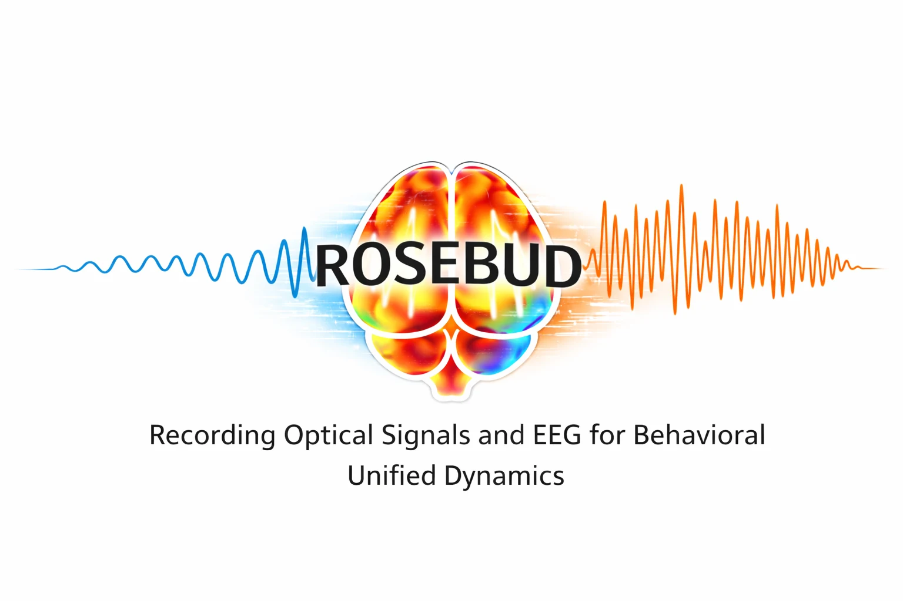

AQP4 Project
Our recently submitted study examined whether AQP4 inhibition protects against acute alcohol-induced behavioral impairment.
Exploring the interplay between cortical dynamics, neurovascular coupling, and behavior through multimodal imaging, EEG, and computational analysis.

Our recently submitted study examined whether AQP4 inhibition protects against acute alcohol-induced behavioral impairment.
An ongoing project developing an interactive virtual laboratory for exploring integrated neurophysiology.
An ongoing project combining optical imaging, EEG, and behavior to study brain dynamics in freely moving animals.